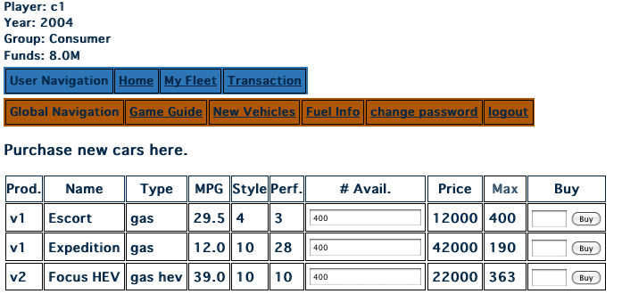
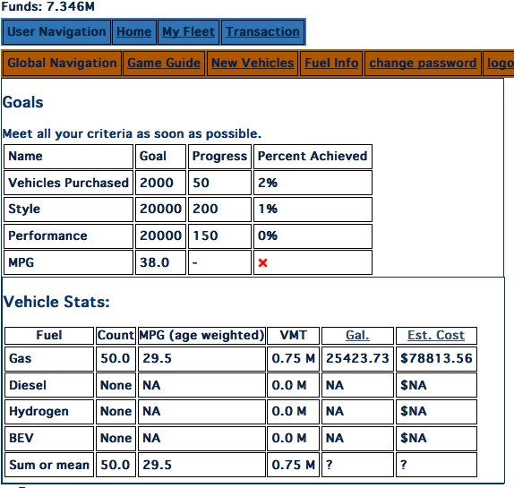
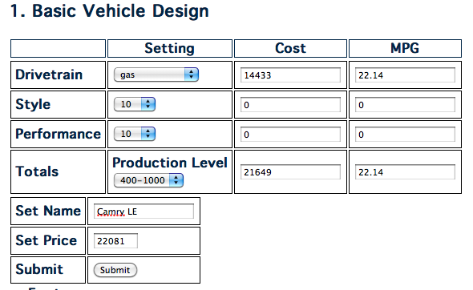
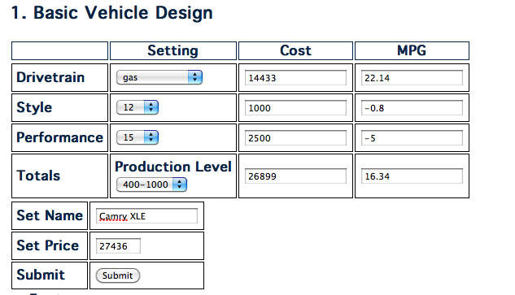

The goal of Autopia is to illuminate the interactions that can be expected in an alternative fuel/vehicle transition over 40-50 years. Players take the roles of Consumers, Vehicle Producers and Fuel Producers. Each player seeks to survive by remainining solvent in the face of regulatory, environmental and historical change.
Play is conducted by the players interacting with each other in physical space (i.e. non-virtual). Players negotiate with each other in order to advance their goals. Consumers seek to own an adequate number of vehicles of the appropriate feature level. Vehicle and fuel producers seek to maximize their profits while meeting regulations and mandates. Based on these negotiations players enter their decisions for the following turn into a web browser interface where they are then used to calculate the next step of the model.
The turn begins with players receiving income for purchasing vehicles and fuel. Each consumer has a set of goals for the quantity of vehicle he should own and the feature levels of those vehicles. The consumer purchases cars designed by the Vehicle Producers to meet their goals. The consumer who first meets his points goal wins the consumer section of the game. Play ends on the turn when the first consumer or consumers meet their goal. The winners of the fuel and vehicle producer category are determined by the return that they have managed on their initial capital.
topThe consumer's goal is to buy enough vehicles to meet his game goals:
|  |
The vehicle purchase screen for the consumer is shown above. The consumer's budget is in the upper left corner of the screen on the Funds line. The columns are as follows:
The consumer home screen tracks the consumer's point accumulation progress and fuel expenditures.
Each vehicle the consumer purchases will increment his scores for Vehicles Purchased,Style and Performance. The MPG score is the fleet average mpg goal for that consumer. Since a purchased vehicle remains in the consumer's fleet until it wears out (as long as 8 turns, or up to 30 years), consumers must make sure they are making satisfactory progress towards their goal on each turn.|  |
Above is a simple example consumer home screen. This screen shows a consumer who has purchased a total of 50 vehicles. The vehicles purchased had 4 style points and 3 performance points. Thus he has earned 50 points in the vehicle column, 200 points (50 vehicles x 4 points) in Style and 150 points (50 vehicles x 3 points) in Performance. His fleet mpg goal is 38.0 mpg and his actual fleet mpg 29.5 (see Vehicle Stat table).
The Vehicle Statstable provides information on the expectedfuel consumption for the consumer on the following turn. The price of fuel on the next turn is predicted using the current fuel price. Players can look at the Fuel Info page to make their own predictions about the fuel price trends. The fuel expenditure will be deducted from the allowance given to the consumer at the start of the turn..
The consumer can inspect the make up of his fleet using the My Fleet link
topThe vehicle producer's game goal is to maximize his profitability. The vehicle producer can sell up to 5 different vehicle types. During play the vehicle producer meets with consumer players so that he can design vehicles that are attractive to them. Each turn the vehicle producer accumulates R&D points that uses to refine his technology. R&D can be used to improve his drivetrain technology and the style and performance of his vehicle offerings.
The vehicle producer has two main concerns: creating vehicles that will be successful in the market and meeting any government regulations and mandates. The producer can learn what the market desires by interacting with consumers. Consumers will have vehicle budgets and desires for certain levels of performance, style and fuel efficiency. Furthermore, the producer must estimate how many vehicles he believes he can sell. Larger vehicle runs reduce costs, but over-estimating sales and falling short can result in substantial penalties, depending on by how much the producer falls short of his sales target.
|  |
Above is a create vehicle screen for the most basic vehicle possible in the game. The basic vehicle is a midsized, four cylinder, standard gasoline powered sedan similar to the Toyota Camry. The attributes are set as follows:
A choice of 12 drivetrains. Drivetrain effects mpg and price of the the vehicle.
An aggregate value describing the vehicle size, level of amenities and the appearance of the vehicle. The style level of the vehicle impacts its fuel economy. Increasing the style increases mpg, decreasing it does the opposite.
Vehicle power measurement. Each step corresponds to a 1 mpg change in fuel economy.
The dropdown menu represents the run size for the vehicle. The lower level is the minimum number of vehicles that must be sold in order to avoid a penalty. The upper number is the maximum number that can be produced. The penalty formula is:
For example if the producer specified a run of 400-1000 his min level would be 400 vehicles. If he only sold 390 he would be penalized:
This increases the actual production cost of the 390 vehicles sold to ~ 23,900, from 21,649. Given a competitive market for the vehicle the producer will likely see a negative margin for each vehicle sold. The penalty can be severe given a large shortfall. Producers should be careful in their market size estimation for a vehicle and then make sure they get close to their target, even if the vehicle must be sold below cost.
The cost and mpg columns show the final cost and mpg for the vehicle after production run, style and performance have been accounted for.
The vehicle name.
Allows the consumer to set a price using a percentage margin. The price can be still be set manually.
Sales price of the vehicle. This can be altered at any time.
Submit the vehicle for release on the next turn. This decision is irrevocable once made.
|  |